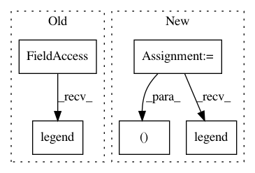

acb8ac5145cfd88fdbd2d381b34883b2c212c8c5,examples/miscellaneous/plot_isotonic_regression.py,,,#,14
Before Change
plt.plot(x, y_, "b.-", markersize=12)
plt.plot(x, lr.predict(x[:, np.newaxis]), "b-")
plt.gca().add_collection(lc)
plt.legend(("Data", "Isotonic Fit", "Linear Fit"), loc="lower right")
plt.title("Isotonic regression")
plt.show()
After Change
lc.set_array(np.ones(len(y)))
lc.set_linewidths(np.full(n, 0.5))
fig, (ax0, ax1) = plt.subplots(ncols=2, figsize=(12, 6))
ax0.plot(x, y, "C0.", markersize=12)
ax0.plot(x, y_, "C1.-", markersize=12)
ax0.plot(x, lr.predict(x[:, np.newaxis]), "C2-")
ax0.add_collection(lc)
ax0.legend(("Training data", "Isotonic fit", "Linear fit"), loc="lower right")
ax0.set_title("Isotonic regression fit on noisy data (n=%d)" % n)
x_test = np.linspace(-10, 110, 1000)
ax1.plot(x_test, ir.predict(x_test), "C1-")
In pattern: SUPERPATTERN
Frequency: 3
Non-data size: 5
Instances
Project Name: scikit-learn/scikit-learn
Commit Name: acb8ac5145cfd88fdbd2d381b34883b2c212c8c5
Time: 2020-06-25
Author: drehbleistift@gmail.com
File Name: examples/miscellaneous/plot_isotonic_regression.py
Class Name:
Method Name:
Project Name: ultralytics/yolov3
Commit Name: cc50757d95b0e720fa6a47b05b8655955046bb89
Time: 2019-04-18
Author: glenn.jocher@ultralytics.com
File Name: utils/utils.py
Class Name:
Method Name: plot_results
Project Name: uber/ludwig
Commit Name: 8e8a0c8384cce0b7bdb85ae08c85013f9090c5f3
Time: 2019-02-09
Author: piero@uber.com
File Name: ludwig/utils/visualization_utils.py
Class Name:
Method Name: lerning_curves_plot